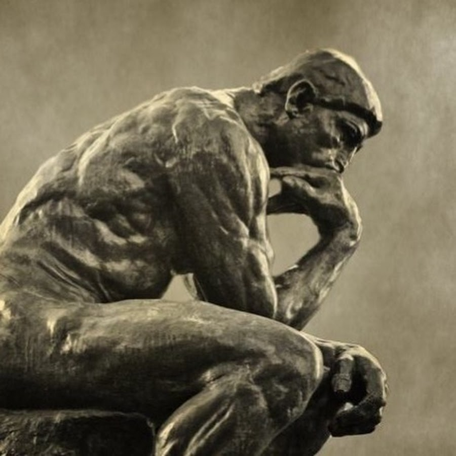
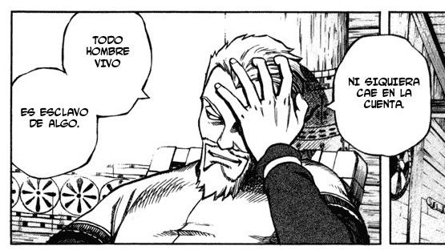
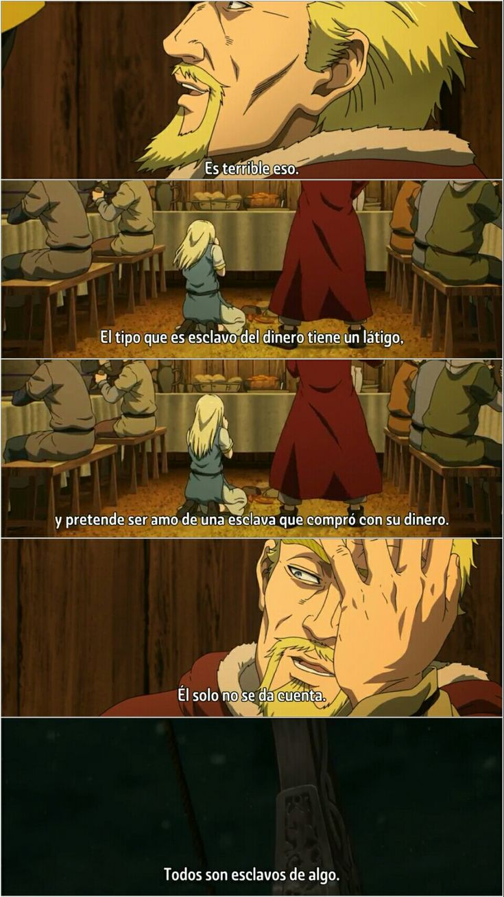

La vida es un poco dura y lo es mas para lo que ven todo en blanco y negro, pero deseo que esas personas abran los ojos y puedan ver el contraste gris del mundo y que se desarrollen o puedan resolver sus problemas internos, por eso le dejo algunas reflexiones mías o citando algunos filósofos o frases reflectivas de iconos de la historia o personajes ficticios de películas y series
esa frase sacada de vinland saga pronunciada por skeladt en donde ve a su empleador golpear e su esclava recien comprada(ex princesa), esta frase hace referencia a como nuestra obsesión nos vuelve esclavos de esta, como en el manga/historieta de Vinland, hay un panel donde dividido donde muestra a Askeladd y su banda festejando en un lugar cálido mientras que la otra a Thorfinn solo en el barco con un clima frio, Thorfinn es esclavo de su venganza
 